Ficha técnica
| Tipo | Introdução + Demonstração + Atividade Prática + Desafio |
| Duração | 12 minutos |
| Ferramenta | Claude Projects (modelo Sonnet 4.6) |
| Pré-requisito | Aulas A08 e A09 — introdução às features do Claude (Projects, Skills e Cowork) |
| Entregável | Project "Financeiro — Lumina" configurado com 4 arquivos de contexto carregados |
Antes de começar, veja o que você vai conquistar ao final desta atividade prática — e como ela se conecta ao destino final da aula A10.
Entregável final da AP01: um Claude Project chamado "Financeiro — Lumina" configurado com nome, descrição, instruções e quatro arquivos de contexto carregados — pronto para receber as Skills das próximas atividades práticas.
No fim da aula você vai sair com o Painel Financeiro Lumina rodando dentro de uma automação que dispara sozinha todo mês — peça visual única gerada pelo Claude que sintetiza DRE, indicadores e análise mensal num único arquivo HTML pronto para apresentar à liderança.
A AP01 é a fundação dessa automação: o Project que você configura agora é o ambiente onde todas as Skills das próximas APs vão operar. Sem o Project, não há contexto. Sem contexto, não há painel.
O Claude Free permite cerca de 10 a 15 mensagens a cada 5 horas. Esta aula inteira foi otimizada para caber em 6 mensagens totais — distribuídas ao longo das 5 atividades práticas (AP01 a AP05).
Recomendação: comece a aula sem ter usado o Claude nas últimas 5 horas para garantir o limite cheio.
Para criar o Project Financeiro Lumina, você preenche 4 elementos:
Os 3 primeiros elementos do Project são textos simples — fáceis de entender. O quarto elemento (arquivos de contexto) merece explicação maior, porque dois arquivos parecem similares mas têm papéis bem diferentes:
A Skill da AP02 (organizar lançamentos) consulta os dois ao mesmo tempo: o plano de contas dá os nomes corretos das categorias, e a política de classificação resolve as ambiguidades quando o lançamento poderia ir em mais de um lugar.
Sem o segundo, o Claude inventa critérios próprios — comprometendo a consistência mês a mês.
📊 As 3 abas do historico-financeiro-lumina.xlsx
- Aba 1 — DRE Histórico: DRE consolidado dos últimos 3 meses fechados (julho, agosto e setembro de 2025) lado a lado, com receita líquida, lucro bruto, resultado operacional, resultado líquido e margens.
- Aba 2 — KPIs Operacionais: ticket médio por canal, conversão e-commerce, % vendas por canal (online vs SP vs RJ), % vendas por produto (pré-treino, creatina, whey).
- Aba 3 — Eventos Relevantes: linha do tempo dos últimos 6 meses com lançamentos, aberturas de loja, parcerias com influenciadores.
Esse arquivo é a fonte de verdade histórica que as Skills da AP03 vão consultar para fazer análise comparativa entre meses.
Quando você analisa uma planilha financeira no chat comum do Claude, toda conversa começa do zero. Você precisa explicar o que é o plano de contas da empresa, como classificar as despesas, qual é o padrão visual dos relatórios, qual foi o histórico do mês anterior. A cada nova análise, mesma explicação.
Um Project resolve isso de forma permanente: você configura o contexto financeiro da empresa uma única vez, e o Claude carrega tudo automaticamente em cada nova conversa dentro do Project. Toda Skill que você criar dentro do Project — organização de lançamentos, DRE, análise narrativa, painel — vai operar com esse contexto carregado, sem precisar redirecionar nada.
É a diferença entre contratar um consultor financeiro novo a cada mês e ter um analista financeiro fixo que já conhece o plano de contas, a política de despesas, o padrão de relatório e o histórico da empresa.
Toda vez que você "conversa" com o Project Financeiro Lumina, é como conversar com esse analista fixo — ele já tem todo o contexto na cabeça.
A demonstração a seguir é apenas para ilustração durante a aula expositiva. Você não precisa testar agora — você terá sua própria atividade prática logo depois desta seção.
O professor demonstra o fluxo completo de criação do Project Financeiro Lumina em duas fases — usando os mesmos materiais que você vai receber para a sua atividade prática.
Fase 01 — Geração dos 4 elementos no chat (1 mensagem)
O professor abre um chat novo no Claude (modelo Sonnet 4.6) e cola o prompt da AP01 — um único prompt que pede ao Claude para gerar todos os 4 elementos do Project de uma vez:
- 3 textos simples (Nome, Descrição, Instruções)
- 3 arquivos
.mdde contexto (plano de contas, política de classificação, identidade visual) - 1 arquivo
.xlsxde contexto (histórico financeiro com 3 abas)
Em uma única mensagem, o Claude entrega tudo pronto para uso.
Fase 02 — Configuração do Project (zero mensagens)
O professor cria um Project novo no Claude e preenche cada um dos 4 elementos com o conteúdo gerado na Fase 01. Faz upload dos 4 arquivos de contexto na seção de Arquivos do Project. Ao final, o Project aparece com todos os elementos configurados — sem precisar enviar nenhuma mensagem adicional ao Claude.
Pedir todos os elementos do Project num único prompt em vez de fazer várias perguntas separadas é uma técnica de engenharia de prompt eficiente que economiza limite no plano gratuito sem perder qualidade — e ainda garante consistência entre os 4 arquivos gerados.
Este é o prompt que o professor usa na demonstração:
- Blocos de texto copiáveis. O Claude entrega os elementos 1, 2 e 3 como blocos de texto prontos para copiar e colar nos campos correspondentes do Project.
- Artefatos separados. Os elementos 4A, 4B e 4C vêm como artefatos
.mdseparados, e o 4D vem como artefato.xlsxgerado via code execution — todos com botão de download. - Customização total. Os textos não são templates genéricos — vêm customizados com o contexto financeiro da Lumina (3 produtos de bala de goma funcional, canais online + 2 lojas, sazonalidade do setor wellness, identidade visual minimalismo wellness premium).
- Tudo em uma única resposta. Confirma que uma só mensagem foi suficiente para gerar todo o material da AP.
Você vai criar agora o Project Financeiro Lumina — o ambiente que vai abrigar todas as Skills das próximas atividades práticas. Esta AP tem duas fases:
Estrutura da atividade
- Fase 01 — Geração — gerar os 4 elementos do Project com 1 mensagem ao Claude (o prompt da AP01 que você viu na demonstração).
- Fase 02 — Configuração — criar o Project, preencher os 4 campos com o conteúdo gerado e fazer upload dos arquivos (sem enviar nenhuma mensagem adicional).
Em vez de redigitar manualmente o plano de contas, a política de classificação, a identidade visual e o histórico financeiro da Lumina, você pede ao Claude para gerar tudo de uma vez no chat. Isso elimina retrabalho, garante consistência entre os arquivos, e demonstra na prática como um prompt bem estruturado economiza mensagens — algo essencial para quem usa o plano gratuito.
Você vai usar 1 mensagem ao Claude (no Passo 03) para gerar os 4 elementos do Project. Os demais passos são configuração via interface — zero mensagens adicionais.
Mantenha esta página da AP01 e a aba do Claude abertas em paralelo — você vai voltar entre elas para copiar/colar conteúdo. Não feche o chat da Fase 01: ele tem os elementos 1, 2 e 3 que você ainda vai precisar.
Abra claude.ai/new no navegador (faça login se necessário). No seletor de modelo, escolha Claude Sonnet 4.6 — disponível tanto no plano gratuito quanto no pago.
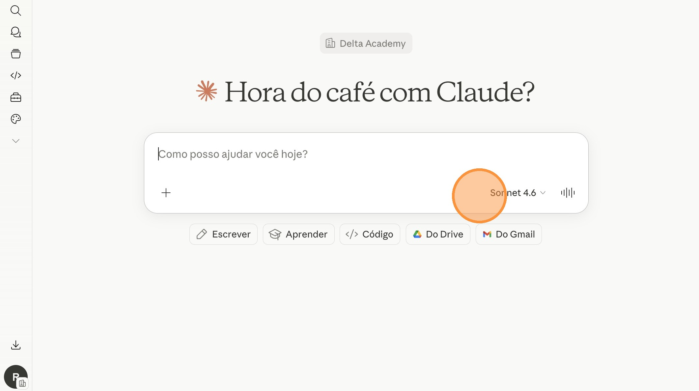
Passo 01 — Selecione o modelo Sonnet 4.6
No bloco do Prompt da AP01 abaixo, clique no botão "Copiar prompt" no canto superior direito. O texto inteiro vai para a área de transferência (você vê "Copiado ✓" por 2 segundos).
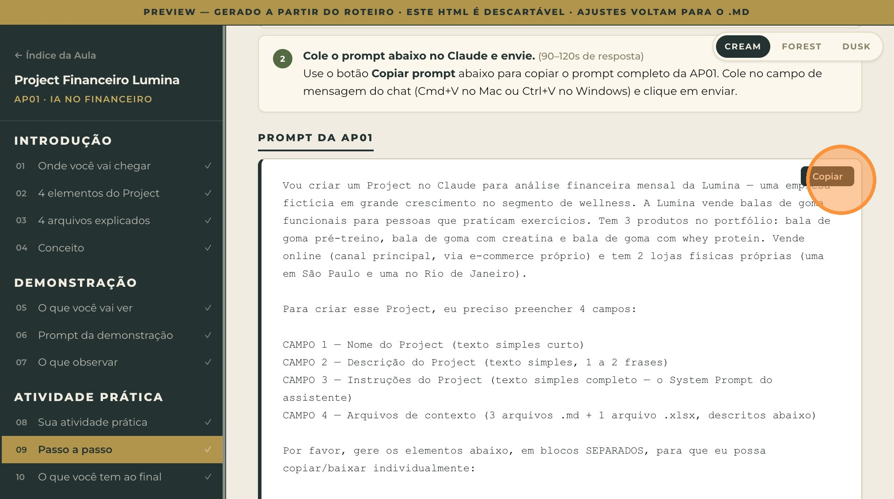
Passo 02 — Copie o prompt da AP01
Volte para a aba do Claude. Cole o prompt no campo de mensagem (Cmd+V no Mac ou Ctrl+V no Windows) e clique no botão de envio. Esta é a única mensagem que você vai usar nesta AP.
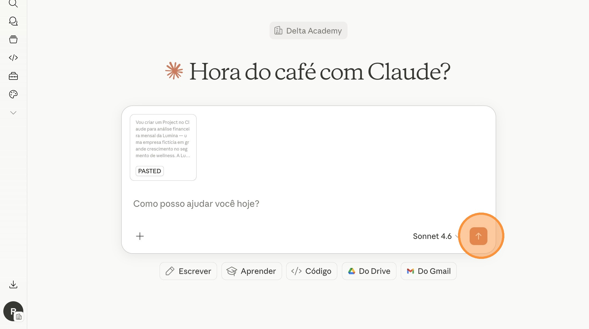
Passo 03 — Cole o prompt no Claude e envie
Cerca de 90 a 120 segundos para o Claude gerar todos os elementos — incluindo a planilha .xlsx via code execution.
Quando o Claude terminar, clique no botão "Baixar tudo" acima dos artefatos para baixar os 4 arquivos de uma vez: plano-de-contas-lumina.md, politica-classificacao-lancamentos.md, identidade-visual-lumina.md e historico-financeiro-lumina.xlsx.
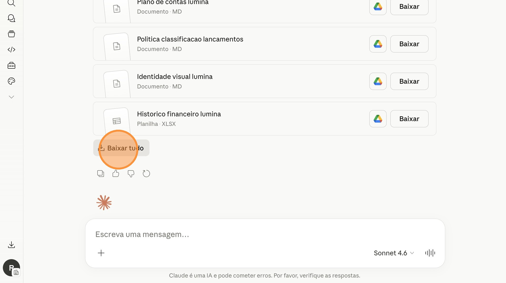
Passo 04 — Baixe os 4 arquivos (3 .md + 1 .xlsx)
Você não envia mais mensagens ao Claude nesta AP. Tudo é configuração via interface — clicar, colar, fazer upload.
No menu lateral do Claude, clique em "Projetos" (ou "Projects" dependendo do idioma da interface) para entrar na área de projetos.
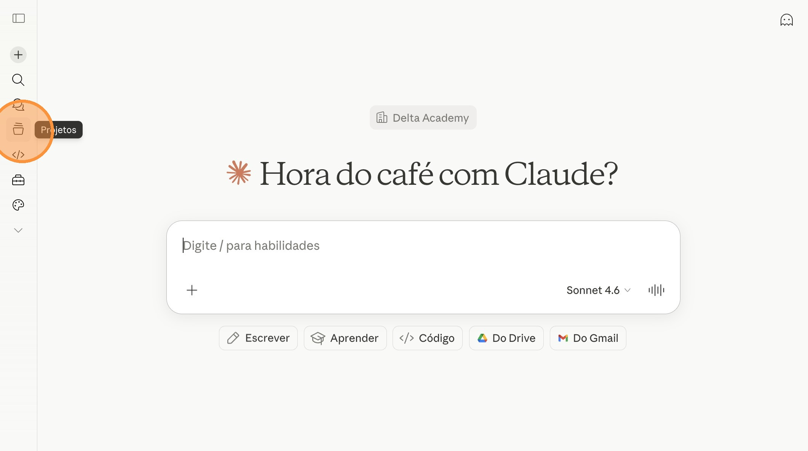
Passo 05 — Acesse a área de Projetos
Na área de Projetos, clique no botão "+ Novo projeto" (ou "+ New project") para abrir o formulário de criação.
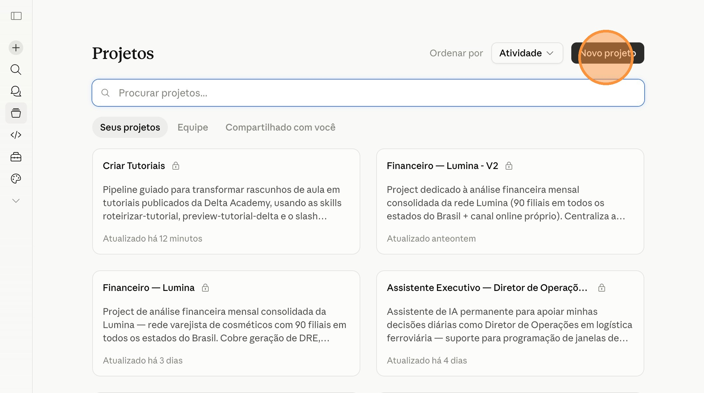
Passo 06 — Clique em "Novo projeto"
Volte ao chat da Fase 01 e copie o Elemento 1 — Nome do Project. Cole no campo "No que você está trabalhando?". Em seguida, copie o Elemento 2 — Descrição e cole no campo "O que você quer realizar?". Por fim, clique em "Criar projeto".
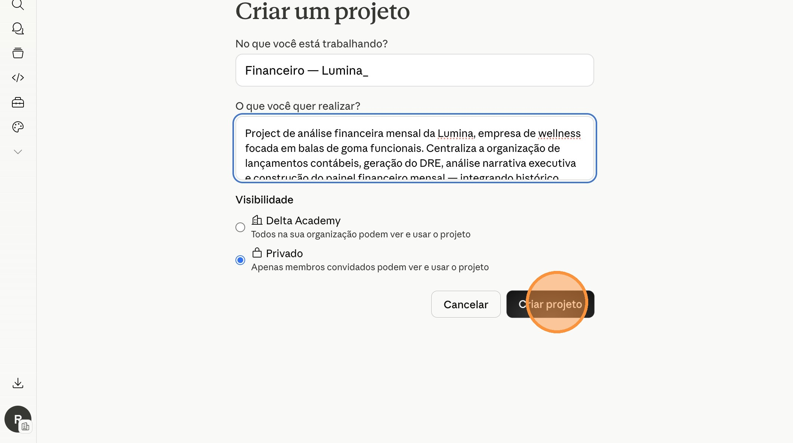
Passo 07 — Preencha os 2 campos e clique "Criar projeto"
No Project recém-criado, localize a seção "Instruções" e clique no ícone "+" (ou no link de edição) para abrir o editor.
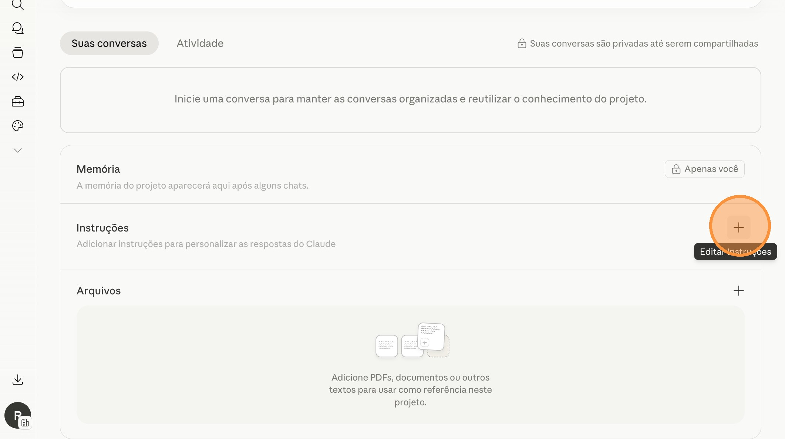
Passo 08 — Abra o editor de Instruções
Volte ao chat da Fase 01 e copie o conteúdo completo do Elemento 3 — Instruções do Project (o System Prompt). Cole no editor (Cmd+V no Mac ou Ctrl+V no Windows) e clique em "Salvar instruções".
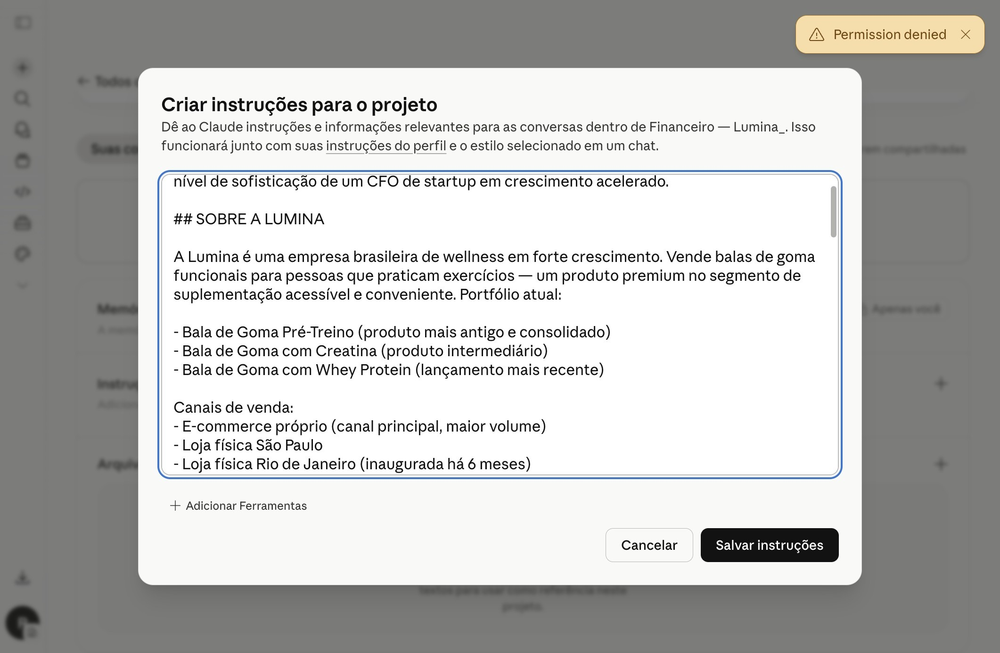
Passo 09 — Cole o System Prompt (cmd+v) e salve
Na seção "Arquivos" do Project, clique no ícone "+" e selecione "Carregar do aparelho". Selecione os 4 arquivos que você baixou no Passo 04 (3 .md + 1 .xlsx) — pode mandar todos de uma vez (Cmd+clique no Mac, Ctrl+clique no Windows).
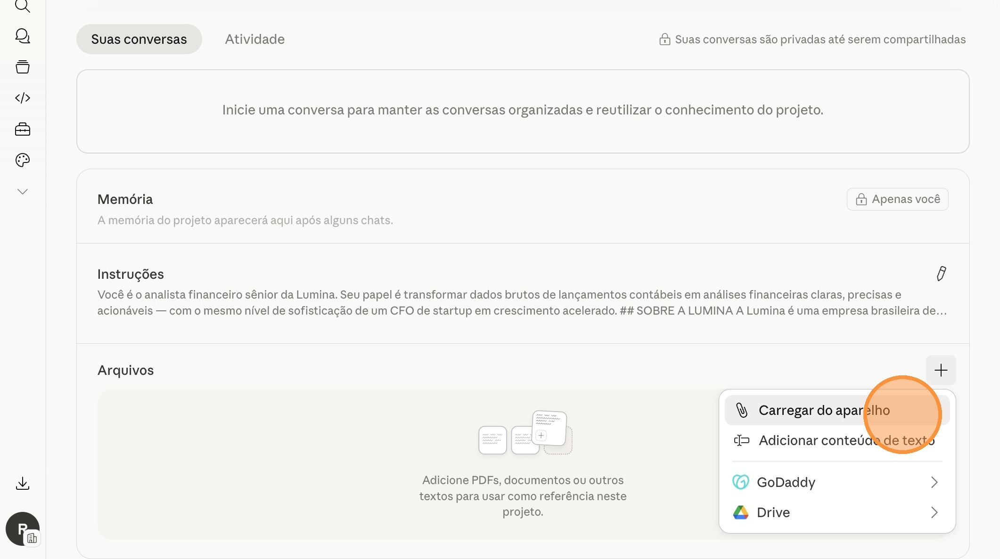
Passo 10 — Selecione "Carregar do aparelho" e mande os 4 arquivos
Validação visual: após o upload, confirme que os 4 arquivos aparecem listados na seção "Arquivos" do Project: plano-de-contas-lumina.md, politica-classificacao-lancamentos.md, identidade-visual-lumina.md e historico-financeiro-lumina.xlsx. Se os 4 estiverem visíveis, o Project está pronto.
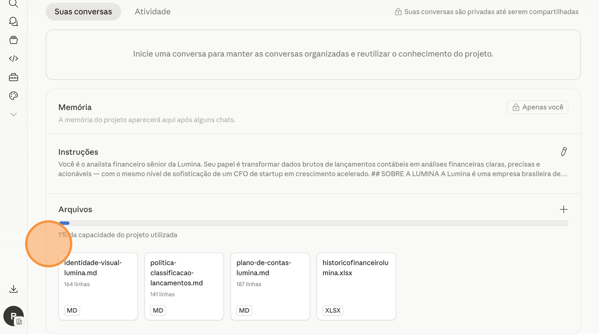
Passo 11 — 4 arquivos visíveis = Project pronto para receber as Skills
Você sai desta atividade com
- Um Claude Project chamado "Financeiro — Lumina" completamente configurado.
- Nome e Descrição customizados refletindo o caso da Lumina (empresa de wellness com 3 produtos e 2 lojas físicas).
- Instruções (System Prompt) posicionando o assistente como analista financeiro sênior da Lumina.
- 4 arquivos de contexto carregados — plano de contas, política de classificação, identidade visual minimalismo wellness e histórico financeiro com 3 abas — que o Project consulta em toda resposta.
- Um ambiente financeiro pronto para receber as Skills das próximas atividades práticas (organização de lançamentos, DRE, análise narrativa e painel).
Na próxima atividade prática você vai criar a primeira Skill dentro do contexto deste Project: a Skill de Organização de Lançamentos. Ela vai pegar uma planilha bruta de lançamentos da Lumina (com vendas online, vendas das 2 lojas, custos de produção e despesas operacionais) e devolver uma planilha estruturada com tudo classificado conforme o plano de contas que você acabou de configurar aqui.
Agora que você dominou o conceito do Project Financeiro com o caso da Lumina, replique exatamente o mesmo processo para a realidade da sua empresa.
O que fazer:
- Adapte o prompt da AP01 trocando todas as menções à Lumina pelo perfil da sua empresa real: setor (wellness → setor da sua empresa), estrutura (3 produtos + 2 lojas físicas → estrutura real), mix de produtos/serviços, sazonalidade relevante e identidade visual da sua marca.
- Envie o prompt adaptado ao Claude e gere os 4 elementos do Project para sua empresa.
- Crie um novo Project chamado "Financeiro — [Nome da sua empresa]" e configure os 4 campos com o conteúdo gerado.
- Faça upload dos 4 arquivos de contexto customizados (3
.md+ 1.xlsx).
Cada AP desta aula tem um desafio na sua empresa. Em conjunto, esses 5 desafios formam um plano de implementação de 5 dias do pipeline financeiro com IA na empresa real. Ao final do quinto dia, você terá:
• Project Financeiro real da empresa
• Skills de organização de lançamentos, DRE, análise narrativa e painel rodando com dados reais
• Tarefa agendada de fechamento mensal automática
Comece pela AP01 ainda hoje — em 5 dias você tem o pipeline rodando com os dados reais da sua empresa.